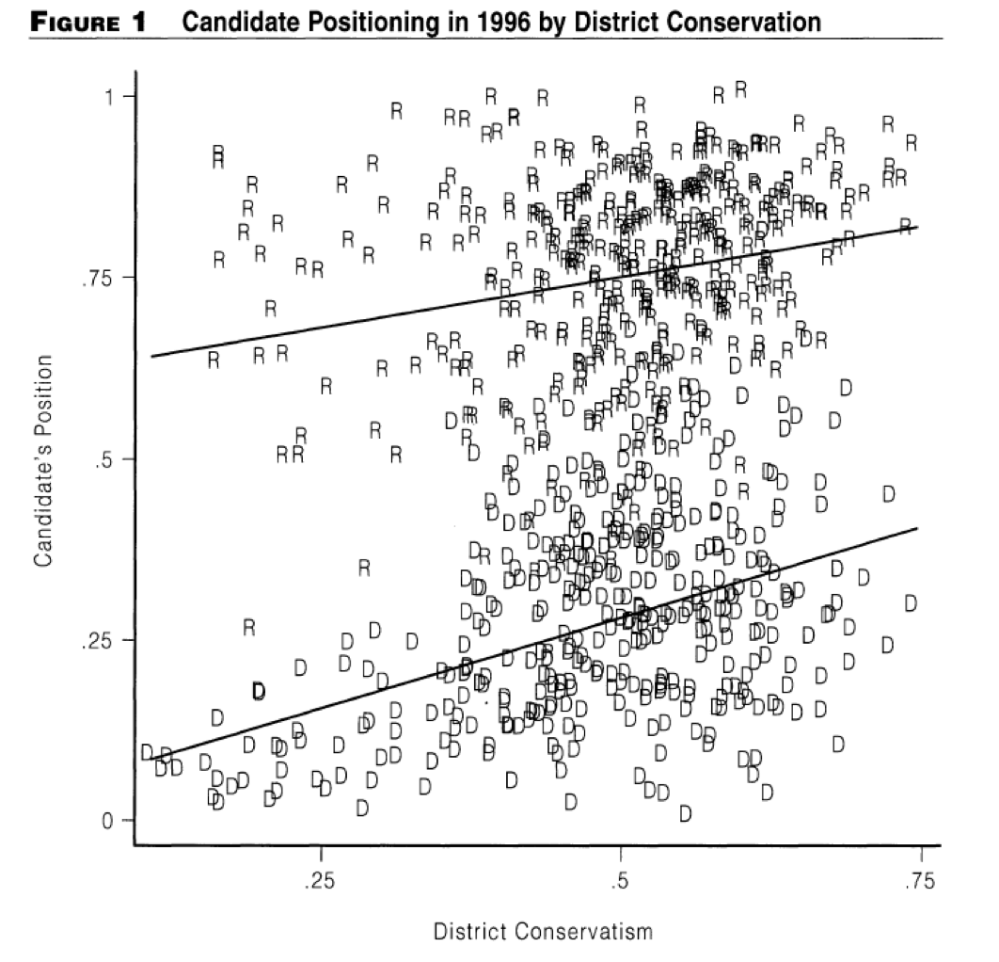

This chapter introduces how candidates compete over policy during elections. We first explore the Median Voter Theory, which predicts that both parties will converge to the median voter during elections. We then review empirical studies that show that this hypothesised convergence does not occur. Finally, we introduce new models that potentially might explain why parties do not converge in the centre.
Median Voter Theory
The Downsian Model
Two candidates \(j \in \{A, B\}\) are competing in an election. Both candidates only have one goal - to win the election. Their utility functions are as follows:
\[ u_j = R\phi, \quad \text{where } \phi =\begin{cases} 1 \quad \text{if win election} \\ 0.5 \quad \text{if election is tied} \\ 0 \quad \text{if lose election} \end{cases} \]
Each candidate \(j \in \{A, B \}\) can choose a platform \(p_j \in [-1, 1]\).
Citizens each have a preferred policy \(q^i \in [-1, 1]\). Citizens’ preferred policies \(q^i\) are uniformly distributed within this continuum:
\[ q^i \sim U[-1, 1] \]
Citizens will vote for the candidate who’s policy \(p_j\) is closest to \(q_i\). Their utility is given as:
\[ u_i = |p_j - q^i| \]
The timing of the game is as follows:
- Each politician \(j \in \{A, B\}\) will select platform \(p_j \in [-1, 1]\).
- Voters observe \(p_A, p_B\), and vote \(e_i \in \{A, B \}\).
- The politician with most votes wins, and payoffs are realised.
Equilibrium Outcome
The utility function of the candidates is:
\[ u_j = R\phi, \quad \text{where } \phi =\begin{cases} 1 \quad \text{if win election} \\ 0.5 \quad \text{if election is tied} \\ 0 \quad \text{if lose election} \end{cases} \]
Thus, to maximise their payoff, they must maximise \(\phi\). The value of \(\phi\) is dependent on the chosen policy position of candidate \(j\), \(p_j\), and the chosen position of their opponent \(p_{-j}\).
\[ \max\limits_{p_j \in [0, 1]} \phi_{p_j, p_{-j}} \]
Since there are two candidates, this implies that to win the election and get \(\phi = 1\), a candidate must win 50% of the votes.
Since voter vote for the closest party to their preferred position \(q^i\), the 50% of votes they win must be in a continuum: i.e. they cannot win the voter at \(q^i = -1\) and \(q_i = 1\) if they do not win the voters in between.
Under these assumptions, the median voter - whose position is exactly the 50th percentile of voters, becomes pivotal. It is not possible to win a continuum of voters more than 50% without winning the median voter.
Thus, the median voter is the pivotal vote that you need to win.
How can candidates \(j \in \{A, B\}\) win the pivotal voter? Candidates win a voter’s vote if they are the closes to the voter’s preferred policy.
Thus, both parties must be closer than the other to the median voter’s policy. Each party will move closer, until they both converge on the median voter.
Let us denote \(q^m\) as the median voter’s policy. Thus, the median voter theory predicts both party’s chosen positions will converge at \(q^m\):
\[ p_A^* = p_B^* = q^m \]
At this equilibrium, there is a tie - both candidates win 50% of the vote, and thus, both have 50% probability of winning the election.
If either player moves away from this position, they will lose the median voter, and lose the election. Thus, there exists no profitable deviation from this equilibrium.
Empirical Evidence
The median voter theory thus argues that both parties should converge at the median voter’s preferences. But is this actually the case? Do parties really converge at the same platform?
The Manifesto Project by the New York Times looked at US elections between 2000 and 2016. As shown by the figure below, clearly, both parties did not converge (and in fact, diverged 2012-onwards).

Ansolabehere, Snyder, and Stewart (2001) surveyed some candidates from 1996. The two lines are the average policy of each party. Clearly, the average policies of both parties are not converging - there is some distance between them.

Further studies, including Bonica (2014) and Lee et al (2004), run other designs, such as regression discontinuities. All find divergence in party positions, not convergence.
Thus, there lacks empirical proof of consistent convergence. Of course, sometimes it occurs, but it is clearly not a given.
Policy-Seeking Model
Policy-Seeking Candidates
Why is there no convergence of parties to the median voter, as was predicted by the Downsian Model? One obvious place to look is at the assumptions in the Downsian Model. We assumed in the Downsian Model, that all candidates care about is winning the election (Rent-seeking).
However, if we think about the real world, this isn’t really the case. It is hard to imagine that in order to win an election, Bernie Sanders would forgo everything he has fought for, and suddenly become a centrist. Politicians like Bernie clearly have some utility derived from sticking with their beliefs and principles (Policy-seeking).
Let us take the Downsian model, but adjust the utility of the candidates \(j \in \{A, B\}\) to reflect this policy-seeking nature.
Let us say party \(A\) wants a policy as close as possible to \(-1\). The more they move away from \(-1\), the more they lose utility. For party \(B\), let us say their preferred policy is \(1\).
The final implemented policy of the winning party \(p\), is determined by who wins the election. If you lose the election, you have to deal with the winner’s preferred policy. Let us define \(\pi(p_A, p_B)\) as the probability of candidate \(A\) winning the election given the chosen \(p_A\) and \(p_B\):
\[ u_A(p_A) = \underbrace{\pi(p_A, p_B)}_{\text{Pr A wins}}\underbrace{(-(p_A + 1)^2)}_{\text{A's utility}} + \underbrace{(1-\pi(p_A, p_B))}_{\text{Pr A loses}}\underbrace{(-(p_B + 1)^2)}_{\text{A's utility}} \]
\[ u_B(p_B) = \underbrace{(1-\pi(p_A, p_B))}_{\text{Pr B wins}}\underbrace{(-(p_B - 1)^2)}_{\text{B's utility}} + \underbrace{\pi(p_A, p_B)}_{\text{Pr B loses}}\underbrace{(-(p_A - 1)^2)}_{\text{B's utility}} \]
Equilibrium Outcome
What is the equilibrium of this game? Surprisingly, it is still the median voter’s position \(q^m\).
Let us say \(p_A = -0.5\), and \(p_B = 0.5\). In this situation, both candidates have a 50% chance of winning since they are equidistant from the median voter \(q^m\). Thus, \(\pi(-0.5, 0.5) = 0.5\). Using the utility functions above, we get:
\[ u_A(-0.5) = 0.5\underbrace{(-(-0.5 + 1)^2)}_{\text{A's utility}} + 0.5\underbrace{(-(0.5 + 1)^2)}_{\text{A's utility}} = -1.25 \]
\[ u_B(p_B) = 0.5\underbrace{(-(0.5 - 1)^2)}_{\text{B's utility}} + 0.5\underbrace{(-(-0.5 - 1)^2)}_{\text{B's utility}} = -1.25 \]
What if \(p_A\) slightly deviates closer to the median voter, to \(-0.4\)? Now, the probability of candidate \(A\) winning is \(\pi(-0.4, 0.5)= 1\), since candidate \(A\) is closer to the median voter \(q^m\). Thus, candidate \(A\) now has a utility function of:
\[ u_A(-0.4) = 1\underbrace{(-(-0.4 + 1)^2)}_{\text{A's utility}} + 0\underbrace{(-(0.5 + 1)^2)}_{\text{A's utility}} = -0.36 \]
Thus, we can see candidate \(A\) has a profitable deviation.
Why? The key is that if a party loses an election, they have to deal with their opponents policy \(p\). Thus, you are willing to win the election at all costs, because you do not want your opponent to implement their policy.
For example, if it was a far-left candidate versus a far-right candidate, the far left candidate would be incentivised to move closer to the median voter’s position \(q^m\), thus winning the election, and preventing the far-right policies they hate.
Thus, even with policy-seeking candidates, the equilibrium still suggests that both parties converge at \(q^m\). So, policy seeking is not the reason we see divergence in the real world.
Voting on More than Policy
Voters Vote on Other Factors
So far, we have focused on voters voting exclusively on policy, and found that there is no divergence in parties. We still need another model that might explain why there is divergence in our empirical exercises.
We know from the real world, citizens don’t just vote on policy. There are other factors, such as competence, looks, speaking ability, charisma, etc., that all effect who wins elections. For example, take this graph of favourability ratings of British parties:
It is unlikely that parties are changing their platforms every few weeks. It seems to indicate that some other factor other than left-right policy position, that determines who voters want to vote for.
Probabilistic Voting Model
We will add non-policy related “shocks” to each voter, which we will call valence shocks.
All voters receive a common valence shock \(\delta\). This \(\delta\) tells us something about how the voter \(i\) feels about party \(A\). This \(\delta\) is drawn from a uniform distribution.
\[ \delta \sim \underbrace{U\left[ -\frac{1}{\psi}, \ \frac{1}{\psi} \right]}_{\text{uniformly distributed}} \]
\(\psi \in (0, 1)\) measures the importance of policy. The greater \(\psi\) is, the more salient policy is with voters, and this will decrease the range of valence shock \(\delta\).
If \(\delta\) is positive, then that means voter \(i\) likes candidate \(A\) for non-policy reasons. If \(\delta\) is negative, then voter \(i\) dislikes candidate \(A\) for non-policy reasons. When \(|\delta|\) is larger, the importance of non-policy related individuals is more important than policy.
Any voter \(i\)’s utility depends on the implemented policy of the winner \(p\), and their preferred policy \(q^i\):
\[ u_i(p, q^i) = \underbrace{-|p-q^i|}_{\text{p utility}} + \underbrace{\begin{cases} \delta \quad \text{if } A \text{ is elected} \\ 0 \quad \text{if } B \text{ is elected} \end{cases}}_{\text{non-policy valence shock}} \]
The candidate’s \(j \in \{A, B\}\) utility function is determined by the distance of the winner’s policy from their preferred policy \(q^j\). We will restrict \(q^j\) such that \(q^A < 0 < q^B\) (so both parties will have preferred policies on opposite sides of median \(q^m = 0\)):
\[ u_A(p_A) = \underbrace{\pi(p_A, p_B)}_{\text{Pr A wins}}\underbrace{(-|p_A - q^A|)}_{\text{A's utility}} + \underbrace{(1-\pi(p_A, p_B))}_{\text{Pr A loses}}\underbrace{(-|p_B - q^A|)}_{\text{A's utility}} \]
\[ u_B(p_B) = \underbrace{(1-\pi(p_A, p_B))}_{\text{Pr B wins}}\underbrace{(-|p_B - q^B|)}_{\text{B's utility}} + \underbrace{\pi(p_A, p_B)}_{\text{Pr B loses}}\underbrace{(-|p_A - q^B|)}_{\text{B's utility}} \]
Timing of the game is as follows:
- Candidates propose their platforms \(p_A, p_B\) simultaneously.
- The voter observes the two platforms \(p_A, p_B\), and only the voter observes their valence shock \(\delta\).
- Voter chooses who to vote for in \(j \in \{A, B\}\).
Equilibrium Outcome
Since this is a dynamic game, we can use backwards induction to solve this game.
Let us think about the voter’s electoral choice. A voter \(i\) elects \(A\) if and only if she gets a higher utility from \(p_A\) than \(p_B\). Mathematically:
\[ \underbrace{-|p_A - q^i| + \delta}_{u_i(p_A)} ≥ \underbrace{-|p_B - q^i|}_{u_i(p_B)} \]
Thus, we obtain that voter \(i\) elects \(A\), if and only if \(\delta\) meets the following condition:
\[ \delta ≥ |p_A - q^i| - |p_B - q^i| \]
The median voter thus has the condition:
\[ \underbrace{\delta ≥ |p_A - 0| - |p_B - 0|}_{\text{since }q_m = \ 0} \]
Now, let us think about the candidates \(j \in \{A, B\}\). The candidate does not know \(\delta\), only how it is distributed. Candidate \(A\) knows that they can only win the election if they win the median voter, and they can only win the median voter if the above condition of \(\delta\) holds true.
We can calculate the probability \(\delta\) fits the above condition by using the cumulative density function of a uniform distribution:
\[ Pr(X ≥ x) = \frac{b-x}{b-a} \quad s.t. \quad X \sim U[a, b] \]
Thus, we can calculate the probability of \(\delta\) meeting this condition:
\[ \begin{split} Pr(\delta ≥ |p_A - 0| - |p_B - 0|) & = \frac{\frac{1}{\psi} - (|p_A - 0|-|p_B - 0|)}{\frac{1}{\psi} - \left(-\frac{1}{\psi} \right)} \\ & = \frac{\frac{1}{\psi} - (|p_A|-|p_b|)}{\frac{2}{\psi}} \\ & = \left( \frac{1}{\psi} - |p_A| + |p_B| \right) \frac{\psi}{2} \\ & = \frac{1}{2} + \psi\left( \frac{|p_B| - |p_A|}{2}\right) \end{split} \]
We know candidate \(A\) can only win if this condition is met. Thus, this is the probabililty of \(A\) winning:
\[ \pi(p_A, p_B)= \frac{1}{2} + \psi\left( \frac{|p_B| - |p_A|}{2}\right) \]
Now, let us think about candidate \(A\)’s utility function that candidate \(A\) wants to maximise.
\[ u_A(p_A) = \underbrace{\pi(p_A, p_B)}_{\text{Pr A wins}}\underbrace{(-|p_A - q^A|)}_{\text{A's utility}} + \underbrace{(1-\pi(p_A, p_B))}_{\text{Pr A loses}}\underbrace{(-|p_B - q^A|)}_{\text{A's utility}} \]
We have already calculated \(\pi(p_A, p_B)\), so let us plug that in:
\[ \begin{split} u_A(p_A) = & \underbrace{\left(\frac{1}{2} + \psi\left( \frac{|p_B| - |p_A|}{2}\right)\right)}_{\text{Pr A wins}}\underbrace{(-|p_A - q^A|)}_{\text{A's utility}} \\ & \qquad \qquad \qquad+ \underbrace{(1- \left(\frac{1}{2} + \psi\left( \frac{|p_B| - |p_A|}{2}\right) \right))}_{\text{Pr A loses}}\underbrace{(-|p_B - q^A|)}_{\text{A's utility}} \\ = & \left(\frac{1}{2} + \psi\left( \frac{|p_B| - |p_A|}{2}\right)\right)(-|p_A - q^A|) \\ & \qquad \qquad \qquad + (\frac{1}{2} - \psi\left( \frac{|p_B| - |p_A|}{2}\right))(-|p_B - q^A|)\\ \end{split} \]
We cannot yet take the first order condition, because of the absolute value functions. Let us eliminate them by logic, not math. Recall that \(q^A < 0 < q^B\).
We know that candidate \(A\) will never choose a platform \(p_A < q^A\). From the earlier \(\pi(p_A, p_B)\), we saw that their chances of winning are higher when they are closer to the median. You might as well just deviate to \(q^A\), which would be closer to the median, and your ideal point.
We also know candidate \(A\) will not propose \(p_A > 0\). This is because once they pass \(q^m = 0\), they are decreasing their chances of winning, while moving away from their preferred \(q^A\).
Thus, we know \(p_A \in [q^A, q^m]\). And since this game is symmetrical, we know \(p_B \in [q^m, q^B]\). What does this tell us? It tells us that \(|p_A - q^A| = p_A - q^A\), and \(|p_B - q^A| = p_B - q^A\). Thus, we can rewrite our utility function:
\[ \begin{split} u_A(p_A) = & \ \left(\frac{1}{2} + \psi\left( \frac{p_B - p_A}{2}\right)\right)(-(p_A - q^A) \\ & \qquad \qquad \qquad + \left(\frac{1}{2} - \psi\left( \frac{p_B - p_A}{2}\right)\right)(-(p_B - q^A)) \\ = & \ \left(\frac{1}{2} + \psi\left( \frac{p_B - p_A}{2}\right)\right)(-p_A + q^A) \\ & \qquad \qquad \qquad+ \left(\frac{1}{2} - \psi\left( \frac{p_B - p_A}{2}\right)\right)(-p_B + q^A)) \\ = & \ \left(\frac{1}{2} + \frac{\psi}{2}( p_B - p_A)\right)(-p_A + q^A) \\ & \qquad \qquad \qquad + \left(\frac{1}{2} - \frac{\psi}{2}( p_B - p_A)\right)(-p_B + q^A)) \end{split} \]
Now, we want to maximise \(u_A(p_A)\) given \(p_A\) for candidate \(A\). We can use the product rule to help \((uv)' = u'v + v'u\).
\[ \begin{split} \frac{\partial u_A}{\partial p_A} = & \frac{\partial}{\partial p_A} [ \underbrace{(\frac{1}{2} + \frac{\psi}{2}( p_B - p_A))}_{u_1} \underbrace{(-p_A + q^A)}_{v_1} \\ & \qquad \qquad \qquad + \underbrace{(\frac{1}{2} - \frac{\psi}{2}( p_B - p_A))}_{u_2} \underbrace{(-p_B + q^A))}_{v_2} ] \\ = & \underbrace{\left( - \frac{\psi}{2}\right)}_{u_1'} \underbrace{(-p_A + q^A)}_{v_1} + \underbrace{(-1)}_{v'_1} \underbrace{\left( \frac{1}{2} + \frac{\psi}{2}( p_B - p_A)\right)}_{u_1} \\ & \qquad \qquad \qquad + \underbrace{\left( \frac{\psi}{2}\right)}_{u_2'} \underbrace{(-p_B + q^A)}_{v_1} + \underbrace{(0)}_{v_1'} \underbrace{\left( \frac{1}{2} - \frac{\psi}{2}( p_B - p_A)\right)}_{u_1} \\ = & \left( -\frac{\psi}{2}\right)(-p_A + q^A) - \left(\frac{1}{2} - \frac{\psi}{2}( p_B - p_A)\right) \\ & \qquad \qquad \qquad+ \left( \frac{\psi}{2}\right)(-p_B + q^A) \\ = & \left(\frac{\psi}{2}\right) (-(-p_A + q^A) + (-p_B + q^A)) \\ & \qquad \qquad \qquad- \left(\frac{1}{2} - \frac{\psi}{2}( p_B - p_A)\right)\\ = & \left(\frac{\psi}{2}\right) ((p_A - q^A) - (p_B - q^A)) - \left(\frac{1}{2} - \frac{\psi}{2}( p_B - p_A)\right)\\ \end{split} \]
The equilibrium platform can be viewed as a tradeoff:
- If you move closer to the median, you are increasing your chances of winning the election, but moving further from your preferred \(q^j\).
- If you stay closer to preferred \(q^j\), you are decreasing your chances of winning the election. This can be seen in our maximisation condition:
\[ \underbrace{\left(\frac{\psi}{2}\right) ( (p_A - q^A) - (p_B - q^A))}_{\text{Marg. eff. of preference }} - \underbrace{\left(\frac{1}{2} - \frac{\psi}{2}( p_B - p_A)\right)}_{\text{Marg. eff. of median}} = 0 \]
Solving this, we will get the following solution:
\[ p_A = - \frac{1}{2 \psi} \quad \text{if} \quad - \frac{1}{2 \psi} > q^A \]
Since the game is symmetrical, \(p_B\) will be the same distance from the median:
\[ p_B = \frac{1}{2 \psi} \quad \text{if} \quad \frac{1}{2 \psi} < q^B \]
The additional if conditions state that if the given solution goes further from the median than their preferred policies \(q^A\) and \(q^B\), they will just stick to their preferred candidates.
Interpretation of the Outcome
Our predicted positions of both candidates are:
\[ p_A = - \frac{1}{2 \psi}, \quad p_B = \frac{1}{2 \psi} \]
As we can see, given \(q^m = 0\), there is no predicted convergence of the two parties! This matches what we see empirically - divergence!
Remember this figure we looked at earlier:
The two lines represent the democrats and republicans “average” positioning. This seems to line up well with our data.
Furthermore, recall that we assumed the median voter \(q^m = 0\). Our equilibrium is relative to \(q^m = 0\). However, if we change \(q^m\), we will get \(p_A = q^m - \frac{1}{2 \psi}\) and \(p_B = q^m + \frac{1}{2 \psi}\).
What this predicts is that if the median voter moves either right or left, the entire positioning of both parties changes (and they still do not converge). We can see this matches the empirical evidence above as well - as districts become more conservative, parties move more conservative while still not converging.
Interestingly, we can see the two party’s positioning depends on \(\psi\). Remember that \(\psi\) is the importance of policy. As \(\psi\) increases, the two parties get closer to the median voter. If \(\psi\) becomes smaller, there is further divergence.
However, this second prediction has not been backed up by empirical evidence. Hall and Fowlder (2016) use a regression discontinuity design to test convergence between low and high salience issues, and they do not find convergence.
However, this model is still useful, as it illustrates a critical tradeoff: the tradeoff of making policies more electable, and sticking with your own policy beliefs. This tradeoff dominates political strategy all the time.
Uncertainty over Median Voter
Model with Uncertain Median
We have included some other aspects apart from policy in the last model. But, we still make a huge assumption: that the parties know what the median voter’s positioning is.
Let us assume that there are only 3 policy positions in our policy space: \(p_i \in \{-1, 0, 1\}\). Voters preferred policy \(q^i \in \{-1, 0, 1\}\) as well.
There are two parties \(j \in \{A, B\}\) who want to win the election. However, party \(A\) is considered by voters as the “more competent” voter, and thus, if party \(A\) wins, all voters will get an extra payoff of \(\delta \in (0, 1)\). We can define voter utility as:
\[ u_i(p) = \underbrace{-|p - q^i|}_{\text{utility from } p} + \underbrace{I(p_A,p_B)\delta}_{\text{valence if A wins}} \]
Where \(p\) is the winning party’s policy position, \(q^i\) is the voter’s preferred policy position, and \(I(p_A, p_B)\) is an indicator function where if party \(A\) wins, \(I(p_A, p_B) = 1\), and win party \(B\) wins, \(I(p_A, p_B) = 0\).
Importantly, no parties know the exact location of the median voter. They only know that the median is at -1 with probability \(\alpha\), located at 1 with probability \(\alpha\), and located at 0 with probability \(1- 2\alpha\). Essentially, \(\alpha \in (0, \frac{1}{2})\) captures the polarisation of the electorate.
The model basically says that competence does not supersede policy, but when voters are indifferent between two parties’ policies, they will always prefer the more competent candidate.
Equilibrium Outcome
We can write out the game in a matrix for easier understanding:
\[ \begin{bmatrix} & p_B = -1 & p_B = 0 & p_B = 1 \\ p_A = -1 & (1,0) & (\alpha, 1 - \alpha) & (1- \alpha, \alpha) \\ p_A = 0 & (1 - \alpha, \alpha) & (1, 0) & (1- \alpha, \alpha) \\ p_A = 1 & (1- \alpha, \alpha) & (\alpha, 1- \alpha)& (1, 0) \end{bmatrix} \]
There is no pure strategy Nash Equilibrium. However, there is a mixed strategy Nash Equilibrium.
Let us look at party \(A\)’s best responses while player \(B\) mixes. Let us define \(Pr(p_B = 0) = q\), and \(Pr(p_B = -1) = Pr(p_B = 1) = \frac{1-q}{2}\).
\[ \begin{split} u_A(-1) = & \ 1 Pr(p_B = -1) + \alpha Pr(p_B = 0) + (1-\alpha) Pr(p_B = 1) \\ = & \ 1 \left( \frac{1-q}{2}\right) + \alpha q + (1- \alpha)\frac{1-q}{2} \\ = & \ \underbrace{\frac{1-q}{2}}_{\text{same as}} + \alpha q + \underbrace{\frac{1-q}{2}}_{\text{same as}} - \frac{\alpha(1-q)}{2} \\ = & \ \underbrace{1-q}_{\text{summed}} + \alpha q - \frac{\alpha}{2} + \frac{\alpha q}{2} \\ = & \ 1-q + \frac{3 \alpha q}{2}-\frac{\alpha}{2} \\ \end{split} \]
\[ \begin{split} u_A(0) & = (1-\alpha) Pr(p_B = -1) + 1 Pr(p_B = 0) + (1-\alpha) Pr(p_B = 1) \\ & = \underbrace{(1-\alpha)\frac{1-q}{2}}_{\text{same as}} + 1q + \underbrace{(1-\alpha)\frac{1-q}{2}}_{\text{same as}} \\ & = (1-q)(1- \alpha) + q \\ & = \underbrace{1 - \alpha - q + q\alpha}_{\text{expanded out}} + q \\ & = 1 - \alpha + q\alpha \end{split} \]
For candidate \(A\) to have a mixed strategy, they must be indifferent between the two. Thus:
\[ \begin{split} & u_A(p_A = -1) = u_A(p_A = 0) \\ & 1 - q - \frac{3 \alpha q}{2} - \frac{\alpha}{2} = 1 - \alpha - q \alpha \\ & 2 - 2q + 3 q \alpha - \alpha = 2 - 2\alpha + 2 q \alpha \\ & -2 + q \alpha = - \alpha \\ & -q(2 - \alpha) = - \alpha \\ & q = \frac{\alpha}{2 - \alpha} \end{split} \]
Let us look at party \(B\)’s best responses while player \(B\) mixes. Let us define \(Pr(p_A = 0) = p\), and \(Pr(p_A = -1) = Pr(p_A = 1) = \frac{1-p}{2}\).
\[ \begin{split} u_B(-1) & = \underbrace{0 Pr(p_A = -1)}_{= \ 0} + \alpha Pr(p_A = 0) + \alpha Pr(p_A = 1) \\ & = \alpha p + \alpha \left(\frac{1-p}{2}\right) \\ & = \alpha p + \frac{\alpha}{2} - \frac{\alpha p}{2} \\ & = \frac{\alpha p}{2} + \frac{\alpha}{2} \end{split} \]
\[ \begin{split} u_B(0) & = (1-\alpha) Pr(p_A = -1) + \underbrace{0 Pr(p_A = 0)}_{= \ 0} + (1-\alpha) Pr(p_A = 1) \\ & = (1- \alpha)\left( \frac{1-p}{2} \right) + (1- \alpha)\left( \frac{1-p}{2} \right) \\ & = (1- \alpha) (1-p) \\ & = 1 - \alpha -p + p \alpha \end{split} \]
For candidate \(B\) to have a mixed strategy, they must be indifferent between the two. Thus:
\[ \begin{split} & u_B(p_B = -1) = u_B(p_B = 0) \\ & \frac{\alpha p}{2} + \frac{\alpha}{2} = 1 - \alpha -p + p \alpha \\ & \alpha p + \alpha = 2 - 2\alpha - 2p + 2p \alpha \\ & - \alpha p + 2p = 2 -3 \alpha \\ & p(2 - \alpha) = 2 - 3 \alpha \\ & p = \frac{2-3 \alpha}{2 - \alpha} \end{split} \]
Thus, we have found the probabilities that sustain a mixed strategy Nash Equilibrium.
Candidate \(A\) will play \(p_A = 0\) at probability \(\frac{2 - 3 \alpha}{2 - \alpha}\), and split the remainder between \(p_A = -1\) and \(p_A = 1\).
Candidate \(B\) will play \(p_B = 0\) at probability \(\frac{\alpha}{2 - \alpha}\), and split the remainder between \(p_B = -1\) and \(p_B = 1\).
Interpretation of the Model
We can graph the probability of each player playing the centrist policy 0, given different values of \(\alpha\) (which is polarisation of the elite). Note in this graph, candidate \(L\) refers to candidate \(A\), and candidate \(R\) refers to candidate \(B\).
We can see the disadvantaged candidate \(B\) is far less likely to propose playing the centrist policy 0. Why is this?
Well, if both candidates go to the centrist policy 0, who wins? In the Downsian model, the probability is 50% of winning for both candidates. However, because voters prefer the more competent candidate \(A\), if both converge to the same policy, the voters will vote for candidate \(A\). That means if both candidates converge to the centre, \(A\) wins 100% of the time, and \(B\) cannot win.
Thus, disadvantaged candidate \(B\) has an incentive to become more extreme. Only by differentiating themselves, can they have a chance of winning. They have to hope that the median is indeed at -1 or 1.
Candidate \(A\) thus has the incentive of copying candidate \(B\)’s platform. This is because if they both have the same platform, the more competent \(A\) will win with 100% probability.
What implications does this have? If we look at many elections, we will see the generally more perceived “incompetent” candidate will try to adopt more extreme positions.
For example, during the 2024 UK general election, the unpopular and widely regarded as less-competent Rishi Sunak began to adopt pretty wild policies, such as a National Service plan. Unfortunately for Sunak, the median voter was not at this more extreme end.
Another example could be Donald Trump, who is generally not seen as “competent” or “experienced” as many of his adversaries. He gambled by differentiating himself with populist outside policies. Luckily for Trump, the US median voter was indeed much more right-wing and populist than many had thought, and this propelled Trump into the White House twice.